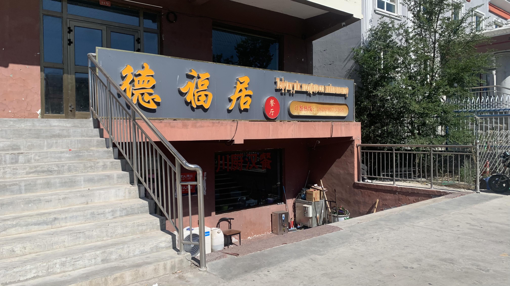
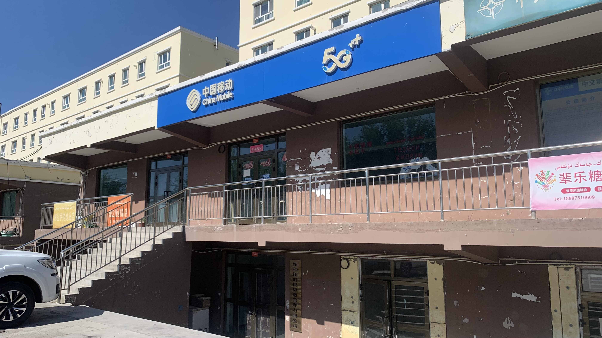
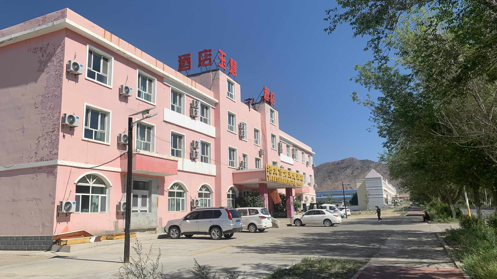
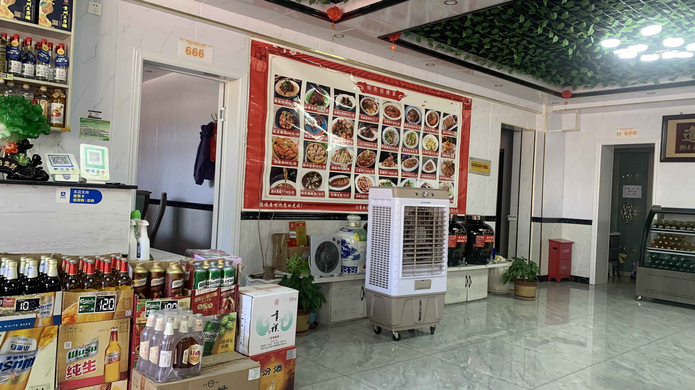
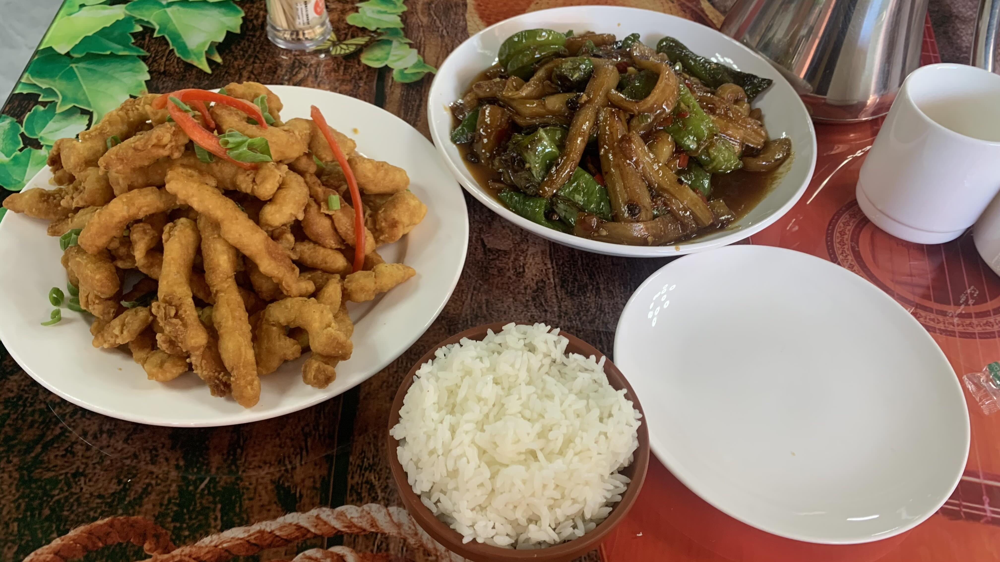
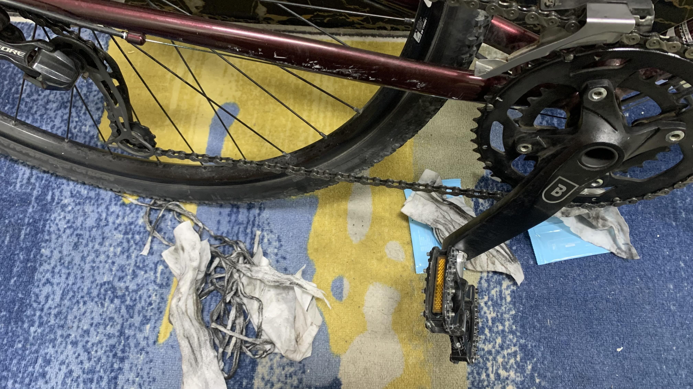

k-Day 119｜動物與植物的組合
到酒店附設的超商買了一條充電線，開始今日的整備工作。
和老闆打聽了附近的餐廳，是老牌川菜館。

推門進去，店員說：「老闆喝醉了還沒來。」
「哪裡可以辦手機卡呢？」
「旁邊二樓就能辦。」

但是門鎖上了呢？
「可能出去了吧。」店員說。

走回酒店，拆下鞋墊清洗，浸泡後的汁水是芬達橘子汽水的顏色。一共洗了五次，變成普洱茶色後覺得差不多了，就拿到窗台上晾曬。
是時候關心愛駒的健康。經過整整一個多月與風沙雨雪搏鬥的二十三號，所有的零件縫隙都裝滿黃沙。各處的電火布皆已劣化，拆下破破爛爛的殘渣，纏上新的。
在廣場調整把手角度，這次不再是手忙腳亂地憑感覺亂折，經過阿爾泰山和永恆逆風的訓練，此刻的我已經更能適應進攻姿勢。

中午又回到餐廳，已經坐了兩桌人。老闆依然沒出現，大家都在座位上耐心地滑著手機等待。

炸肉條和青椒炒茄子。讚嘆農耕社會。
點太多吃不完，剩下的打包回房間吃。
說真的，歷代中國人民面對生存在地球的不同物種時，腦中究竟在想些什麼？同樣是動物和植物的組合，怎麼就能產生如此滿足之感呢？
回到酒店後到一樓超市買了一瓶汽水和咖啡，跟老闆說我想辦電話卡但那裡沒人，老闆立刻打電話叫店員開車過來載我辦卡。
「天氣那麼熱，讓他來載你過去。」
辦卡的店員是中國移動的員工，從老家富藴被派來這裡。聽到這地名，我瞬間想起新疆也有石人啊！沿著阿爾泰山走的石人和鹿石可不是被現代國界切割的，青銅時代的世界是山脈與河谷，石人的路線還沒結束啊。
當然我是在心裡想這些，店員很認真幫我用護照辦卡，因為是第一次幫台灣人辦理，要是弄錯了他得被罰款一千元。

研究了周圍需要邊防證的地區，似乎需要到青河辦理。
半夜睡不著，又開始擦車。把乾掉的濕紙巾剪成條狀，一節一節穿過鏈條縫隙仔細擦掉油漬沾上的泥塊。
身體已經想睡了，但我的意識需要這樣的重複動作撫平過去一個月遺留在心裡的波瀾壯闊。
今日花費： 住宿 100元